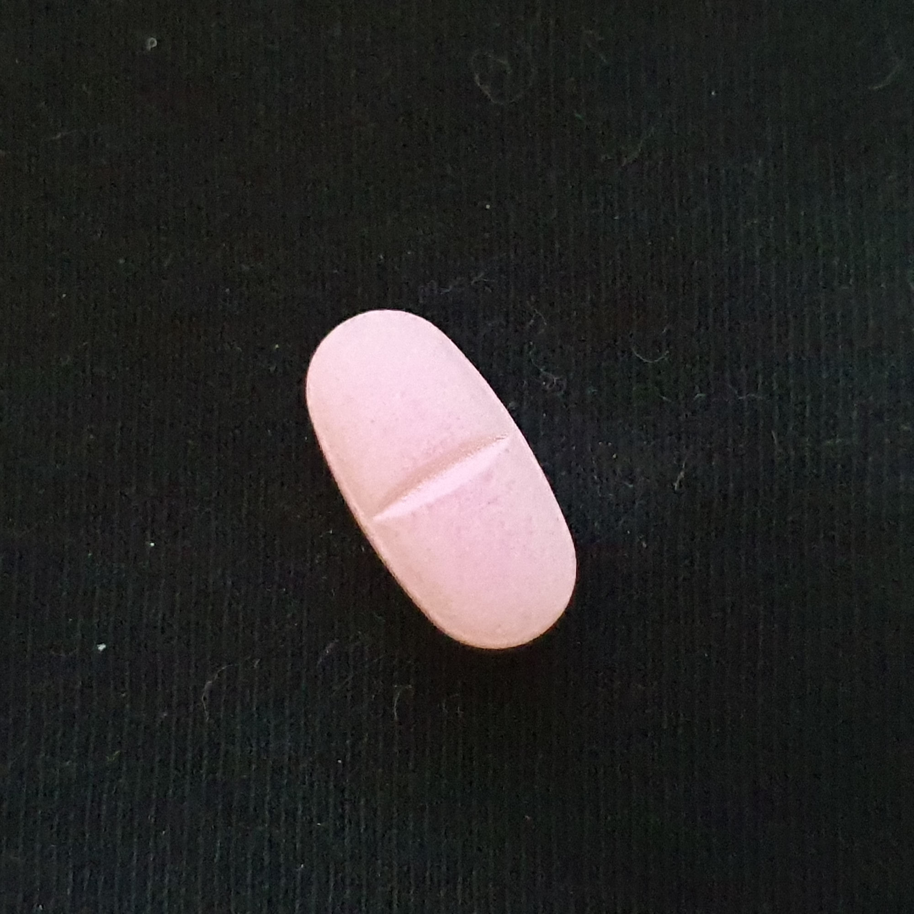
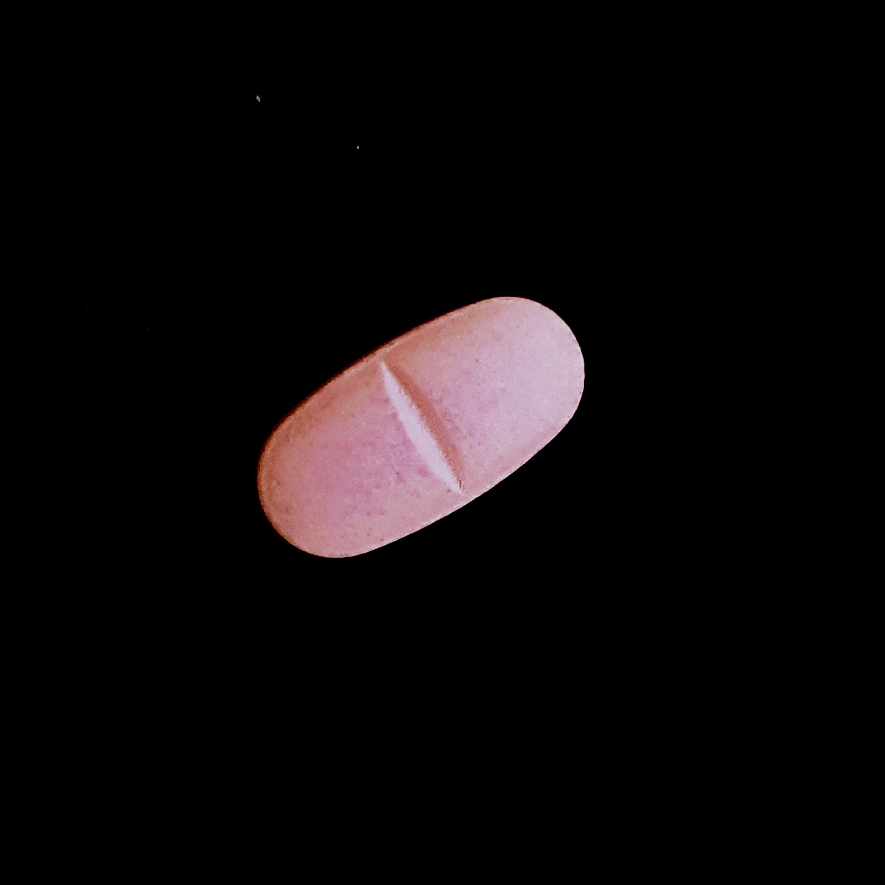

증상
조명이 약하면 흰 알약이 핑크로, 특정 조건에선 핑크가 흰색으로 오분류 (white_caplet ↔ pink_caplet)
원인
검은 배경 촬영본이 카메라 화이트밸런스 보정으로 색이 탈색되어 보임
1차 시도
B/G/R 채널 독립 학습 → 배경까지 색조가 오염되는 부작용으로 실패
재설계
휘도(밝기) + 채도(HSV S채널)만 분리 학습하는 LUT 방식(preprocess/color_fix/)으로 전환, 6클래스 전체 동일 적용
핵심 수치
2.59 → 0.15~1.3
클래스 혼합 학습 → 개별 학습 시 색상 오차(/255) 개선
403장
검은 배경 촬영본 6클래스 전체 적용 범위
촬영 예시 · pink_caplet

예시 1또렷한 핑크로 촬영

예시 2탈색되어 흐린 핑크로 촬영